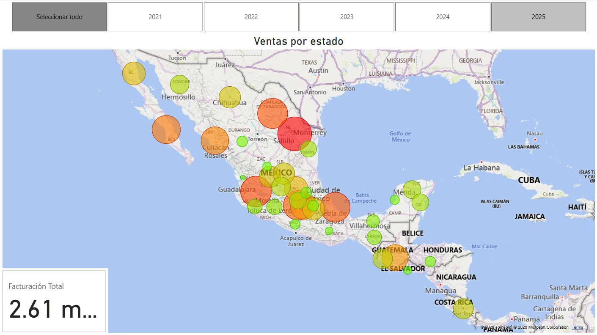

Data governance
Automation
and BI enterprise operations.
Krannich Solar México
At Krannich Solar México, I worked across data governance, ERP analytics, business intelligence, and reporting automation initiatives supporting operational and commercial processes.
My responsibilities evolved from systems and governance support into a more analytical and strategic role focused on transforming ERP information into scalable business insights.
Areas of Impact
Sales Performance Overview

Operational Visibility & KPI Reporting
Designed scalable reporting environments integrating ERP data sources into centralized Power BI reports, improving visibility for the sales team and CEO.
How the Work Was Structured
Dynamics 365 F&O Data Understanding
Analysis of operational structures, ERP entities, business rules, and reporting dependencies across departments.
Data Extraction & Optimization
Development of ETL processes to extract data from Dynamics 365 F&O, using ODATA feeds and using standard connectors to populate Power BI datasets, creating optimized data models and improving reporting performance.
Visualization & Automation
Design of Power BI reports focused on operational KPIs, including maps, charts, and tables to provide insights into sales performance, and implementation of updating policies flows to refresh data daily.
Storytelling and decision support
Presentation of insights to the sales team and CEO, gathering feedback to iterate on report design, and providing ongoing support to ensure the reports continued to meet business needs.
Business Outcomes
The implemented analytics and reporting solutions improved visibility across business operations, reduced manual reporting workloads, and strengthened consistency in KPI interpretation.
Automation initiatives also helped simplify repetitive tasks, accelerate reporting cycles, and improve accessibility of operational information for decision makers.
Overall, the work contributed to a more data-driven culture, enabling the sales team and leadership to make informed decisions based on reliable and timely insights.